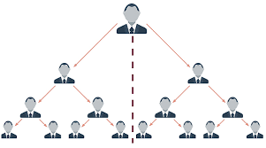

Quem somos
Somos uma empresa de Multi nivel, voltada para ajudar pessoas, a construir um novo patrimonio. Nosso objetivo na internet e proposcioar que cada um de voçês, que esta aqui nesse site pensando em se cadastrar, consigo ganhar dinheiro sem sair de casa. É possivel isso? se me fizerem essa pergunta eu apenas lhes-direi "Sim, é muito possivel!". Na nossa empresa, seu salario é voçê quem faz, os valores são ilimitados, basta voçê se dedicar.
Oque irei fazer para ganhar dinheiro?
Para quem já conhece um pouco sobre Multi Nivel, já tem mais ou menos um noção de como nossa empresa funciona.Mais para quem não tem noção nenhuma bora la. Voçês precisa apenas de se cadastrarem, nada muito burocratico, apenas um cadastro simples, assim que se cadastrarem, temos a taxa de casdastro. A taxa de casdatro serve para manutençao da empresa, onde daremos para voçê todo apoio, pagamentos,links, resultados e tudo mais. Depois que fizerem pagamento, serão gerados seus links, onde basta voçê mandar para as pessoas. Cada pessoa que entrar pelo seu link de afiliado da nossa plataformna, voçê ganha sua comissão.
Como podem ver na imagem acima, estes são nossos niveis. O primeiro é voçê, voçê recebe comissão sempre da perna direita. Sendo assim, sendo assim todos as pessoas que entrarem, por meio do seu link, seu ira receber da primeiro cliente que ele conseguir, e do primeiro que o cliente dele conseguir tambem.